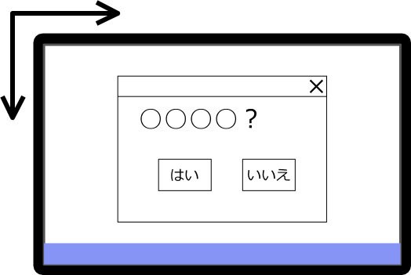
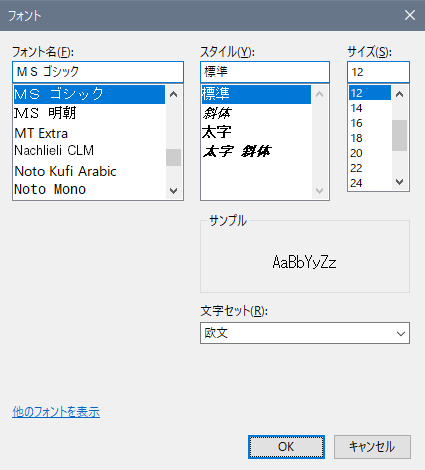
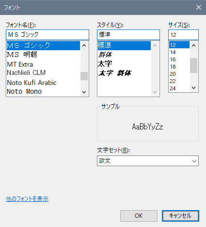
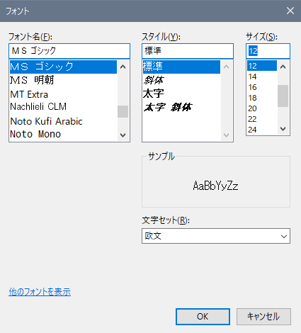

無料で使える RPA の taskt の使い方を紹介しています
はじめに、RPA では大きく分けて 3 つクリックを自動化する方法があります。
自動化というか、画面上のどこをクリックするかの判断というか、まあ言い方はいろいろありますが、ITmeida さんのこの記事 (https://www.itmedia.co.jp/enterprise/articles/1803/08/news012.html) が詳しいので、ぜひ読んでください。
それで、3 つの方式とは、下のようなものです。
taskt ではありがたいことに、一応 3 つすべての方法が利用できます。
これら、3 つの特徴をまとめると、こんな感じです。
| 位置 (座標) | 画像認識 | 構造 (要素) | |
|---|---|---|---|
| 作りやすさ | 簡単 | 面倒くさい | 難しい |
| 正確性 | 低い | 普通 | 高い |
| その他欠点 | ソフト (画面) の大きさ、位置に影響されやすい | ソフト (画面) の大きさや見た目に影響されやすい | 使えないときがある 使える・使えないの判断が難しい |
位置 (座標) による指定は、Send Mose Move 命令で行うことができますし、Record の機能を使うと、自動的にマウスの動きやクリックが Send Mouse Move 命令に変換されます。
そのため、taskt では一番簡単に作れるのかもしれません。
しかし、位置 (座標) というのは、パソコンの画面の左上を基準にどこをクリックするかという単純な情報でしかありません。

そのため、ソフト (画面) の位置が少しでもずれると、目的のボタンなどがクリックできなくなります。
この問題を解決するために、Move Window 命令や Resize Window 命令でソフト (画面) の大きさを事前に設定するという方法があります。
しかし、何らかの原因で目的のボタンの上に別のソフトの画面が重なっていると、クリックできなかったりと予期せぬ問題が発生することもあります。
画像による認識は Image Recognition 命令を使用します。
これは、パソコンの画面全体をから目的の画像を探す方法です。
ほとんどのソフトでは、ソフト (画面) の大きさによってボタンの大きさが変化することはないので、座標を指定するよりは正確にクリックできます。
目的のボタンがほかのソフトと重なって見えないというような状況以外は、ほぼうまくいくような気がするかもしれませんが、落とし穴もあります。
下のメモ帳の画面の OK ボタンはすべて違いますが、区別がつきますか？



左のボタンは外枠が青く、その内側に点線が付いています。中央のボタンは外枠が黒いです。右のボタンは外枠が青いですが、点線がありません。
画像認識がどこまでの違いがあっても同じと判断するかは不明ですが、人間には同じに見えるものでも、画像認識では違うと判断されることがあるので注意が必要です。
また、Windows 7、Windows 8、Windows 10 と画面やボタンの見た目が異なるので、使っている Windows ごとに認識させる画像を設定しなおす必要があります。
ソフトの画面は、専門的な内容になりますが、さまざまな要素により構成されています。そして、その要素を特定することで、クリックする場所も決めることができます。
taskt では UI Automation 命令という命令で、構造 (要素) を指定した操作ができます。
構造 (要素) は、ソフト (画面) の大きさによる違いや、Windows ごとのデザインの違いなどの影響を受けないため、クリックする位置をかなり正確に指定できます。
ただし、構造 (要素) を認識できないソフトが存在したり、そもそも taskt の画面で UI Automation 命令を指定するのに知識が必要だったりと、使いこなすことが難しい命令です。
例えば、ボタンをクリックするという行為は、ボタンにフォーカスを合わせ Enter キーを押すのと変わりません。
ほかにも、あるボタンをクリックする操作が、メニューから呼び出せるかもしれません。保存する画面なら Ctrl + S、ファイルを開く画面なら Ctrl + O のように、ショートカットキーが存在するかもしれません。
このように、マウス操作をキーボード操作 (Send Keystrokes 命令、Send Advanced Keystrokes 命令) に置き換えることにより、ソフト (画面) の大きさや、Windows の違いなどを無視してクリックの操作が自動化できます。
特に、Office 2010 以降のリボン画面は、Alt キーを押すことで、リボンの各種ボタンをクリックしたのと同じ効果が得られるので、RPA を使うことを考える場合、かなり便利です。
今後のアップデートで徐々に改善され、マウス操作が正確に簡単にできるようになるのかもしれませんが、現時点 (バージョン 3.2.0.0 時点) マウス操作にこだわるよりも、キーボード操作をさせるようにスクリプトを作った方が、作る時間も正確さも高いものが作れる気がします。